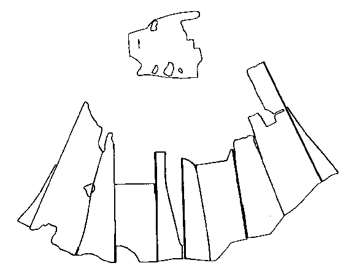
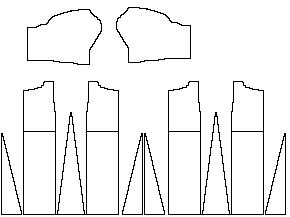

Tunic
S�derk�ping

After Nockert
This particolored outfit was originally made from four quarters, red and blue. It
is interesting in that it has lateral seams in the front and back as well as the vertical.
It also has gores in the front, back and sides. This find has been
dendrochronoligically dated to before 1242.

Pattern drawing is my estimate of what the original may have looked like, and may be
totally wrong.
- Tunic Material Length: 80-90 cm (31.5-35.4")
- Width at the Bottom: about 220 cm (86.6")
- Width at the Waist: about 130 cm (51.2")
- Width at the Top: about 110 cm (43.3")
- Arm Length: about 45 cm (24")
- Arm Width: 27 cm (10.6")
Torso Material Thread Count
- Warp is 12 Z-spun threads/cm (30.48 threads per inch)
- Weft is 7-8 S-spun theads/cm (19.05-21.6 threads per inch)
Sleeve Material Thread Count
- Warp is 16 Z-spun threads/cm (40.6 threads per inch)
- Weft is 8 S-spun theads/cm (21.6 threads per inch)
Some Sources:
- Hasselmo, M. and Tesch, S. "�rs Arkeologiska Unders�kningar i
S�derk�ping. En Premlimin�r Rapport." S�derk�ping Gille. 1984.
- Nockert, Margareta. "Unam Tunicam Halwskipftan" S:t Ragnhilds Gilles i
S�derk�ping. (�rsbok 1992) S�derk�ping: Tellotryck AB, 1992.
Return to Contents
Some Clothing of the Middle Ages - Tunics - Soderkoping, by I. Marc Carlson,
Copyright 1998 This code is given for the free exchange of information, provided the
Author's Name is included in all future revisions, and no money change hands-